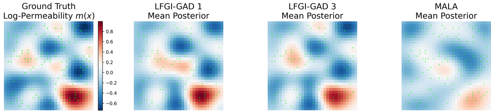
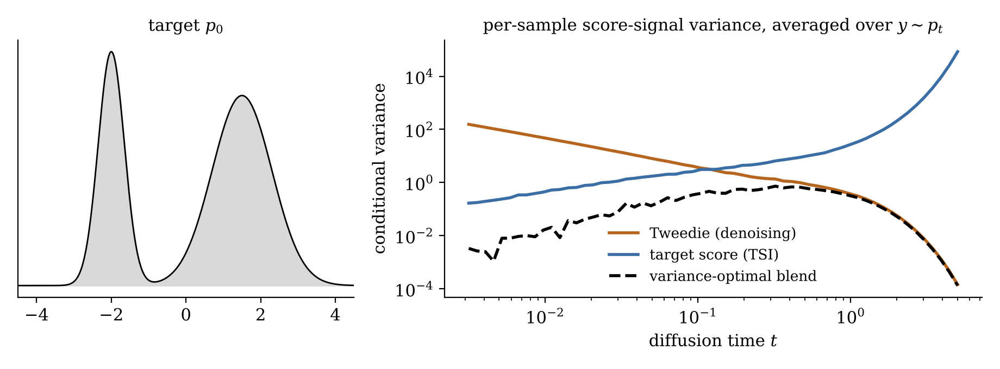

Aloïs Duston
Oden Institute for Computational Engineering and Sciences, UT Austin
I work at the intersection of score-based generative modeling, Bayesian inverse problems, and scientific machine learning, advised by Tan Bui-Thanh in the PHO-ICES group.
Much of my work is about estimating the scores that diffusion models need when the usual data-driven route is noisy or unavailable: blending denoising and target-score identities with variance-optimal gates, rebuilding scores iteratively to sample posteriors of PDE-constrained inverse problems, and using the analytic structure of a VAE encoder to train latent diffusion models end to end.
Research

Gated Action Dissipation In progress
Iterative diffusion transport for Bayesian inverse problems, rebuilt from target derivatives and an unweighted sample bank.
Project page →
End-to-end latent diffusion (CSEM) In progress
An analytic component-score target that lets the VAE encoder and the diffusion prior train jointly.
Project page →
Laplace–Fisher Gate Identities Preprint
The variance-optimal matrix gate for blending Tweedie and target-score estimators.
Project page →
Variance-reduced diffusion sampling Preprint
Self-normalized target-score estimators and state–time dependent blending with Tweedie.
Project page →News
- Jun 2026 Preprint: Laplace–Fisher Gate Identities for Optimal Matrix-Gated Blended Score Estimation.
- Jan 2026 Preprint: Variance-Reduced Diffusion Sampling via Target Score Identity, submitted to SIAM Journal on Scientific Computing.